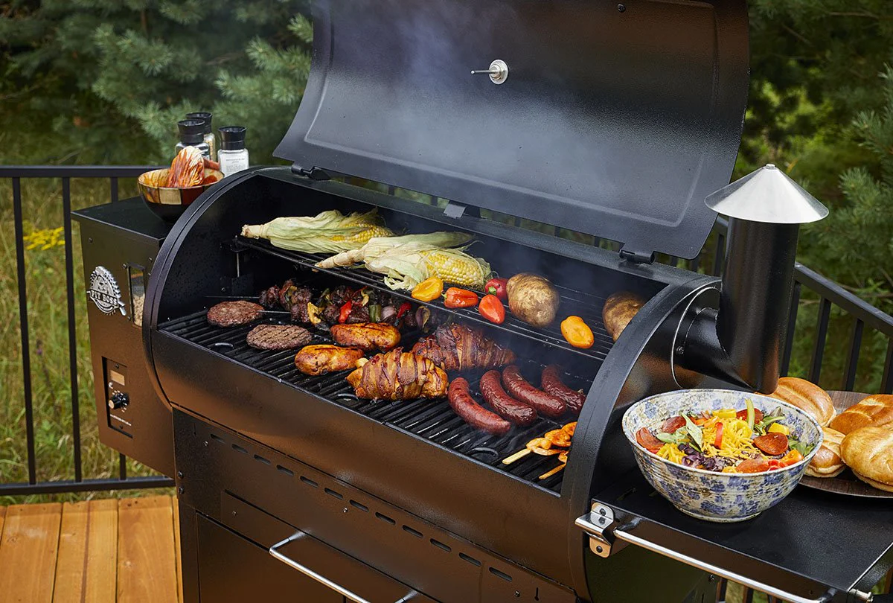

Pellet smokers have revolutionized backyard BBQ by combining the flavor of real wood with the convenience of an oven. Using compressed hardwood pellets, these grills use an auger and an induction fan to maintain precise temperatures. This "set it and forget it" technology allows anyone to create competition-quality brisket, ribs, and pulled pork without staying up all night tending to a fire.
Want to find the best temperatures for different cuts? Check out the pros at Traeger Kitchen.